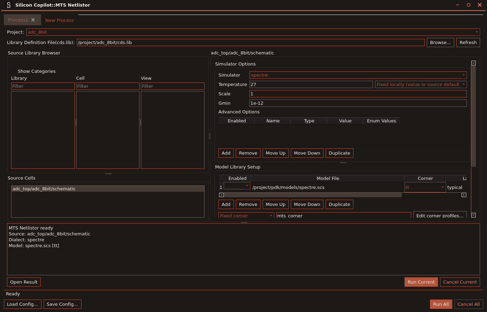

CAD FLOW / MULTI TECHNOLOGY SIMULATION
MTS · 多工艺网表生成
从指定项目的 schematic 生成 Spectre 或 hspiceD 网表，整理模型与工艺参数作用域，并按需发布到当前工程的目标库。
先配置项目来源
export MTS_NETLISTOR_MODULEFILES="/path/to/project/modulefiles"
export PROJ_ADE_DB_DIR="/path/to/my/project/simulation"
# modulecmd 不在标准路径时再设置。
# export MTS_NETLISTOR_MODULECMD="/path/to/modules/bin/modulecmd"
command -v modulecmd ocean dbAccess cdsTextTo5x cdsLibDebug
mts-netlistor gui项目 modulefiles 目录必须显式提供。mts-netlistor gui --module-root DIR 可覆盖环境设置；两者均未提供、为空或目录不存在时，GUI 提示后结束启动。宿主 MODULEPATH 不作为项目列表，仅供所选 module 的依赖解析。
PROJ_ADE_DB_DIR 当前仍有效，必须是可写绝对路径，用于 MTS 结果保存。它不属于已经去掉 PROJ_ 前缀的 DRC / LVS / RCE 变量。项目 modulefile 应提供什么
每个源项目 module 必须自行定义 PROJ_USER_HOME，该目录下的 cds.lib 是源项目默认库定义。还需加载该项目适用的 Cadence、PDK、许可证和模型环境。MTS 在独立环境中加载所选 module，不修改宿主 Virtuoso 的项目环境。
#%Module1.0
# 将路径换为这个源项目的个人工作目录。
setenv PROJ_USER_HOME /path/to/source/project/user
# 在这里加载本站点批准的 Cadence、PDK 与许可证模块。
# PROJ_USER_HOME/cds.lib 必须已存在并能正确解析源库。这段只说明必要目录字段，完整站点工具配置由 CAD 提供。仅创建空 modulefile 不足以完成源项目准备。
在 GUI 中配置与生成


MTS_NETLISTOR_MODULEFILES。点击图片查看原始尺寸从 SiCo → MTS Netlistor… 打开，或使用独立命令启动。窗口以 Process 页签组织多个源 cell；每个页签有自己的源工程、仿真设置、模型列表、发布目标和日志。
| 页面/控件 | 详细说明 | 使用要点 |
|---|---|---|
| Process1 / New Process 页签 | 每个 Process 页处理一个或多个源 cell；点击 New Process 新建页，页签右侧 × 关闭。 | Run All 只处理已经填写 source 的页；每个页有独立后台 OCEAN 进程。 |
| Project | 选择源项目；候选来自项目 modulefile 列表。 | 切换项目会更换源 cds.lib 与工具环境，不要把它当作目标工艺切换。 |
| Source cds.lib + Browse… | 指定源工程库映射文件，并浏览选择。 | 源库必须能在该 cds.lib 中解析；路径变化会触发源目录重新读取。 |
| Refresh | 强制重新读取源库、cell 和 view 目录。 | 新增 cell 未显示时使用；成功快照在 GUI 内缓存约 300 秒。 |
| Library / Cell / View 浏览器与过滤器 | 逐列筛选并选择源 view；双击或选择后加入 Source Cells 队列。 | 只选择需要生成的 schematic view；不要混入目标库中的派生 view。 |
| Source Cells 队列 | 列出已经加入本 Process 的源 cell。 | 右键可删除；切换行会把右侧设置保存到对应 cell 草稿。 |
| Simulator Options → Simulator | 选择 spectre 或 hspiceD。 | 方言决定可用选项、输出后缀和模型 section 语义；切换后重新核对设置。 |
| Temperature + 模式 | 固定本页温度，或继承 ADE top temperature。 | 固定模式接受数值或源默认；继承模式只对具备 ADE top 上下文的会话可靠。 |
| Scale / Gmin | 设置仿真 scale 与 gmin。 | 沿用源工艺单位与数据类型；不要用 scale 修正错误的模型单位。 |
| Advanced Options 表 | 列 Enabled、Name、Type、Value、Enum Values；按钮 Add、Remove、Duplicate、Move Up、Move Down。 | 选项按顺序生成；类型和枚举值必须与仿真器语法一致。旧版本单独的 tnom/scalem/reltol 输入已并入该表。 |
| Model Library Setup | 列 Enabled、Model File、Corner、Label；按钮 Add、Remove、Move Up、Move Down、Duplicate。 | 可双击 Model File 浏览；corner 从模型文件 section 读取，顺序会影响网表中的 include 顺序。 |
| Edit corner profiles… | 管理 CornerExport 的 fixed/library 模式和多组模型 profile。 | Library 模式要求 Spectre，并为每个 corner 提供完整模型集合。 |
| Simulation Views | Generate symbol view、Generate netlist view，各自带 Overwrite if exist；Target Library / Target Cell 在启用生成后可用。 | 目标库来自当前目标会话的权威 catalog；默认拒绝覆盖已有 view。 |
| 日志区 | 显示源目录读取、默认项、生成、发布和仿真器诊断。 | 只保留可读诊断；OCEAN 输入回显会被隐藏。失败时先看最后一条 error。 |
| Open Result | 打开当前页最近一次成功生成的结果浏览器。 | 没有成功运行时保持禁用；不会打开半成品目录。 |
| Run Current / Cancel Current | 运行当前页，或取消当前页正在进行的生成/发布。 | 取消不会删除已经完成的其它页结果；重新运行前核对日志。 |
| Load Config… / Save Config… | 读取或保存整个 MTS 工作台配置，包括多个 Process 页。 | 这是 workspace 配置，不是 CLI request TOML；两者格式不同。 |
| Run All / Cancel All | 按页签顺序运行所有已配置 Process，或取消当前批次。 | 运行中配置编辑被锁定；先取消批次再修改页签或配置。 |
- 选择源项目并核对 Source cds.lib；需要读取新增 cell 时点击 Refresh。
- 在浏览器中选择 library / cell / schematic view，加入 Source Cells。
- 选择 spectre 或 hspiceD，核对温度、scale、gmin、Advanced Options 和模型 section/顺序。
- 如需发布，在 Simulation Views 启用 symbol 或 netlist view，选择目标 library / cell，并明确是否需要覆盖。
- 点击 Run Current，或 Run All 顺序处理已配置项目；检查日志与结果后通过 Open Result 查看输出。
- 用 Save Config… 保存整个工作台配置，之后用 Load Config… 恢复。
每个 Process 页复用自己的后台 OCEAN，切换 cell 通常无需重启源进程。更换项目、配置变化或任务失败可能重新创建该进程。首次加载 PDK 会比后续切换慢，留意日志中的初始化进度。
配置目标发布
发布目标在源 cell 的 Simulation Views 中配置：启用 symbol view 或 netlist view，选择 Target Library / Target Cell，再运行该 Process。发布与生成属于同一回合，不再需要单独的 Publish Views 按钮。目标库需在目标工程的 cds.lib 中可解析且可写；独立 GUI 若没有目标 session，需要先提供正确的目标会话信息，从 Virtuoso 菜单启动会带入当前目标工程。
source 与 target 使用独立的 Cadence 环境。不要把源项目 cds.lib 加载到当前目标 Virtuoso 来“切换工艺”；在 MTS 的 Process 页面选择源项目即可。默认拒绝覆盖已有目标，确实需要更新时明确选择相应 symbol / netlist view 覆盖选项。
命令行 request 示例
CLI 的 request 文件与 GUI 保存的 workspace 配置格式不同。下面示例只生成一个源 cell 的 Spectre 网表；填写实际源库、模型和路径后先校验。
format = "sico-mts-netlistor-request"
schema_version = 1
[source]
cds_lib = "/path/to/source/project/cds.lib"
library = "source_design"
cell = "amplifier"
view = "schematic"
[simulator]
dialect = "spectre"
[[models]]
enabled = true
file = "/path/to/pdk/models/process.scs"
section = "tt"
[process_options]
temp = 25.0mts-netlistor validate mts-request.toml --json
mts-netlistor generate mts-request.toml --json
mts-netlistor inspect /path/to/completed/run --json结果保存到 $PROJ_ADE_DB_DIR/<lib>.<cell>.<view>/.mts-netlistor/runs/<运行标识>/，包括源网表、作用域处理结果、日志与发布记录。普通 Spectre 输出后缀为 .spe，hspiceD 为 .sp；Spectre corner library 模式生成 _corners.scs。
常见问题
| 现象 | 检查 |
|---|---|
| 没有项目候选 | MTS_NETLISTOR_MODULEFILES 是否存在且包含可用 modulefile；不要仅设置 MODULEPATH。 |
| 项目加载失败 | modulecmd 是否可执行；module 是否自己定义 PROJ_USER_HOME；该目录的 cds.lib 是否可访问。 |
| 生成时提示输出根无效 | PROJ_ADE_DB_DIR 是否为绝对路径且可写。 |
| 新 cell 没显示 | 点击 Refresh 强制重新读取源库；成功的源目录快照在 GUI 内缓存约 300 秒。 |
| 模型或默认设置不对 | 核对所选源项目、方言及模型 section；需要的 startup_file / simrc 必须显式提供。 |